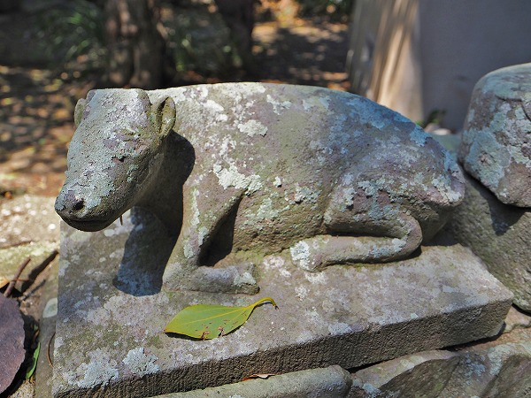

壱岐島である。
対馬と同様、朝鮮半島との交易上の拠点の島である。
焼酎好きな私としては
麦焼酎発祥の地としてその名を個人的にはビカビカに輝かせている島でもある（もちろん土産に買いましたよ）。
そんな壱岐に
不思議な神社があるという話を聞きつけて行ってみることにした。
それは島の北部にある
男嶽神社。
道中の案内からすでに見ざる言わざる聞かざるの三猿が出迎えてくれることからも判るように
猿尽くしの神社なのだ。
神社に到着。
門前には狛犬ならぬ
狛猿がお出迎え。
あ、こっちにも。何持ってるんだろう？
拝殿。
この男嶽神社は2000年以上前からその存在を知られている
由緒正しき神社だという。
明治時代まではこの山全体が聖域とされており、一般の人の入山は禁止されていたという。
拝殿の先には本殿が見える。
で、その脇にはこれまたユーモラスなおサルさんが一対立っている。
祭神の猿田彦命に因んで猿の石像がたくさん奉納されているのだという。
若干抽象的な身体のフォルム、同じく抽象的な顔が特徴的なおサルさんだ。
同じく抽象的なデザインのおサルさんが。
拝殿左側には女性の石像があった。
天鈿女命（アメノウズメノミコト）の像だ。
天岩戸の前で半裸で踊ったエピソードでお馴染みの女神である。
何故、天鈿女命の像がここにあるのかは後に説明しよう。
拝殿裏の本殿の周りには牛の石像がたくさん奉納されている。

皆、伏せた牛だ。

猿がたくさんあると聞いて来たので、正直面食らった。
しかし本殿の右サイドに行くと猿が現れる。

あだち、とは奉納者なのか、作者なのか。
目鼻口の部分を大きく凹ませて彫る作風の猿が数多く見受けられた。
どこか
プリミティブながらモダンな彫像だ。
見ざる言わざる聞かざるじゃねえし。
あだち…
目が単純に〇なのもここの猿の特徴だ。
延々と三猿が続く。
この三猿を奉納することで何を祈願しているのだろう。
最近奉納された牛像。和牛繁栄とコロナ撲滅を祈願している。
壱岐は超高級とされる壱岐牛の産地だ。
ちょっとキュートなモンキー。
グッと寄った三猿。
言うな言うな。の三猿。
おっと。
元気なモンキーもいますね。
キッチリ珍子が付いてます。つまり
ここの猿は雄猿なのだ。
関東では猿の石像の奉納と言えば
山王信仰における猿奉納なのだが、そちらは安産祈願で
雌の猿像を奉納するのだ。
つまり同じ猿像奉納でも意味合いが違うようだ。
猿の傍らに立つ神像。
多分、
猿田彦命だとおもう。
…というのも丁度逆サイドに天鈿女命像があり、その夫でありこの神社の祭神が猿田彦命だからだ。
さらに進むと…
サル猿さる猿…サルゲッチュ―（古い）！
ひな壇状に大量の猿像が奉納されているではないか！
その数、
250体以上！
拝殿から本殿に至る石段の脇にもサル猿さる猿…サルゲッチュ―（古い）！
奉納された時期は特定できないが、作風からして同じような形状の猿が多いような気がする。

目が二重丸だったり。
いずれにせよこれだけ多くの猿像が奉納されている訳だから、
島民からの信仰は篤いのだろう。
猿軍団の後ろには御神体の岩がある（屋根で覆われたところ）。
近年パワースポットとしてもてはやされているようだ。
このサイトを長年御愛顧ただいている読者諸氏は御存じの通り、私はパワースポットとかスピリチュアルスポット的なものが苦手なので敢えてスルーさせていただきます。ご勘弁を。
私の興味はあくまでもこの神社のモンキー奉納なので。
絵馬もちょっとイマドキな感じですね。
近年は縁結びに力を入れているようで、本土からの女子二人組の縁結び希望グループが数組訪れてました。
こんなところまで来るなんて凄い熱意ですよね…。
いや、猿見たさにわざわざ壱岐まで来てるオマエも大概だぞ、と言われればぐうの音も出ませんが。ぐぅー。
大変珍しいモノを見させていただきました。男嶽神社に感謝！
境内にカフェがあったが改装中で閉まってました。

境内にある展望台。
島の高台にあるので眺めはいいはず。登ってみよう。
イエイ！絶景！
見下ろすと、小さなダム湖がある。
その近くに男嶽神社の対となる
女嶽神社があるという。
折角だから行ってみよう。
てなわけでダム湖に移動。
地元のニューファミリーがピクニックしているのを横目に階段を登る。
登る。登る。はあはあ。
で、現れたのがこちら。
女嶽神社の御神体である
巣食石である。
この岩は古くからコウノトリが巣を作ったと言われている。だから巣食石。
さらに女嶽神社の祭神である天鈿女命を象徴する岩でもあり、先程の男嶽神社と対になっていることから
縁結びの岩として崇められているという。
口のようにガパッと開いた岩の隙間。
先程の男嶽神社の岩が（載せなかったけど）陽根状だったのに対し、ここの岩は女陰を連想させる形状だ。
つまり男嶽神社、女嶽神社、併せて一対なんだね。
だったらこっちにも雌の猿を奉納すればいいのに、と思ったが、そうはいかないのが世の中の不思議なところですね。
現場からは以上です。